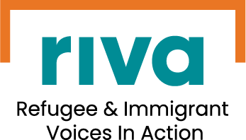

شارك معنا
لك مكان بيننا.
للشباب: تطوّع معناساعد في فعالياتنا واحصل على شهادة موقّعة بساعاتك لساعات الخدمة في المدرسة الثانوية والجامعة والمنح الدراسية.
للأسر: انضموا إليناسجّلوا أبناءكم في برامجنا وشاركونا فعالياتنا العائلية.
تبرّعتبرّع عبر Zelle إلى youthoftomorrowic@gmail.com. كل تبرع يذهب إلى البرامج والرحلات.
كن مرشدًا أو شريكًاشارك بمهارتك، أو ساعد في التوصيل أو التدريب، أو كن شريكًا لنا في برنامج.
«معًا، نمكّن شباب اليوم من صناعة مستقبل الغد.»حنان علي يوسف، رئيسة المنظمة
شركاؤنا


منظمة RIVA، وجمعية طب الأسنان في آيوا، ونادي آيوا سيتي إيلز للسباحة.
تواصل معنا
لديك سؤال؟ نحن هنا.
مركزنا1556 S 1st Ave #C, Iowa City, IA 52240
البريد الإلكترونيyouthoftomorrowic@gmail.com
ادعم شبابنا. تبرّع عبر Zelle إلى youthoftomorrowic@gmail.com.
youthoftomorrow.github.ioالبرامج والفعاليات والصور والفيديوهات ومجلس الإدارة.
منظمة شباب الغد
Youth of Tomorrow
ننمو معًا في آيوا سيتي. أنشطة آمنة وممتعة تساعد شبابنا على النجاح دراسيًا واجتماعيًا وشخصيًا.